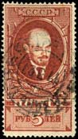
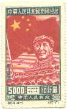
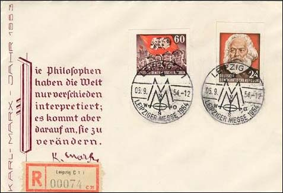
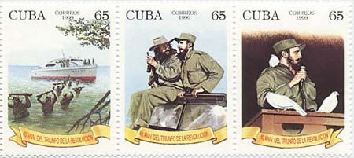
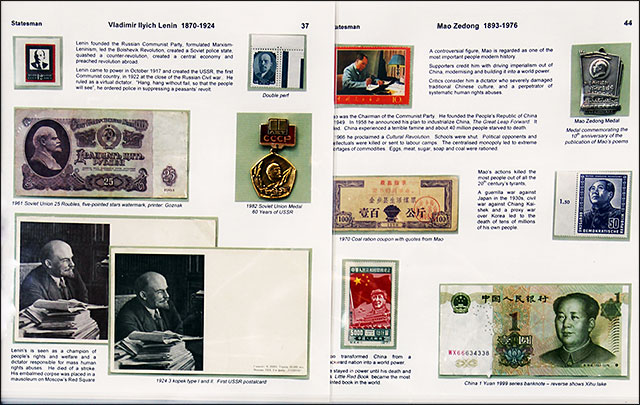
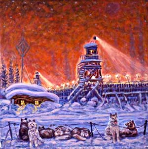
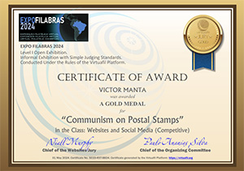

“Leftist tyrannies are the worst of all tyrannies. They own your house, all your goods, your place of employment and all you”re given to eat. They”re absolute. Everyone is afraid, and they”re right to be afraid.” Dissident Cuban journalist Jose Antonio Fornaris Ramos
Radio Yerevan's jokes were very popular in the former Soviet empire. Here is one of them, related to stamps. A listener asks: Why don't our stamps stick to envelopes? Radio Yerevan answers: spit on the right side, please!
I can imagine that the stamps mentioned in this joke looked more or less like those pictured below. They show the most prominent and the most cruel of all communist leaders, the Russians Lenin and Stalin, and the Chinese Mao. Their wrongdoing will be illustrated here through the use of an philatelic material, that very few actually collected in the communist countries but that was issued in large quantities for propagandistic reasons.
|  |
 |
 |
One can ask why somebody should be interested in times that are apparently forever gone, and in a philosophy that has failed everywhere and each time it was applied. The problem is that those times aren't gone yet, because hundreds of millions of people still suffer under the communists' yoke, and because communist ideas are still widely popular and spread around the globe. See for example not only Che Guevara's image or "CCCP" (USSR in Russian fonts) on T-shirts worn by young people in the West, but also the Hammer and Sickle symbol used not only on T-shirts, but also still by many so-called progressive movements.
On the cover shown below, issued by the German Democratic Republic in 1954, one can read Marx's warning words: "The philosophers have only interpreted the world differently; what matters, however, is to change it." His followers haven't waited too long, and they have driven their countries to such a barbarism that they became unrecognizable already within the few years that followed the communists' monopolization of power.

This site speaks about the life in those countries, their leaders, the enslavement of millions of people, the methods used in the said enslavement and the tricks used by Communist leaders to conceal their techniques. We will try to present the human tragedies that are hidden behind the happy faces of workers, peasants and intellectuals that are so often displayed on stamps, and also try to decipher what hides behind the alleged seriousness, confidence and wisdom of communist leaders and philosophers. The stamps issued during those dark, not so distant times, tell us some of these many stories, and we will try to reveal them in the first attempt of this kind on the philatelic Web.
This site was started on July 27, 2003, a day after the official 50th anniversary of the Cuban revolution. On Swiss francophone TV the communism in Cuba was presented as a failure, but nevertheless with some remarkable achievements. In other words, it was credited with some negative but also with some highly positive results, as an example that should not be directly copied, but at least seriously considered...

The TV news didn't mention that Castro came to power thanks to the support of the USA (that wanted get rid the people of Batista's dictatorship), which was the second state worldwide (after Venezuela) that recognized Castro's government. Taking into consideration the real situation in today's life in Cuba or North Korea, the way the news was produced shows the profound desire of certain (usually left-oriented) circles in the free West to continue with the concealing of the horrible reality of the day by day life of the N. Korean population.
The communist topic is still present at the philatelic exhibition. Below is presented an excerpt from an exhibit presented at the World Stamp Show - NY 2016.

Several graphical elements of this site use small excerpts from works of the Russian painter Nicolai Getman, who painted what he personally experienced in Gulag. As a homage to him and to his talent, I show below (reduced) a painting created by him, and named The Guards' Kennel. Those dogs were much better nourished than the zeks, the term used to designate the Gulag's prisoners.

The rails shown in the menu frame on the left should remind us not only of the long distances that the prisoners were forced to travel, in inhumane conditions, but also the fact that the railways themselves were built, to translate a widely spread Soviet expression, "on their bones". The prisoners had to build the railroads that would lead other prisoners to their death while themselves died under the harsh work and weather conditions.
I will extend this site as much as I will be able to do it, considering it as the most important one that I have updated during the last years. It will probably be also my last one, and in a certain sens, the swan song of my philatelic webmaster's soul.

I mention finally that this site was awarded a gold medal in Brazill, at ExpoFilabras 2024.